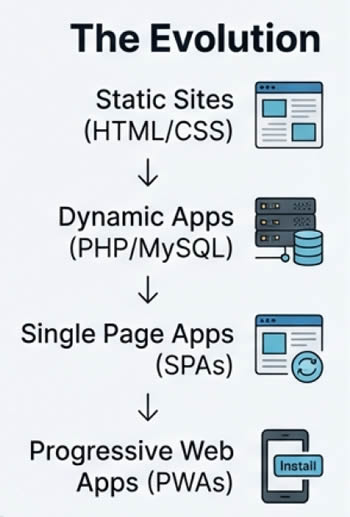
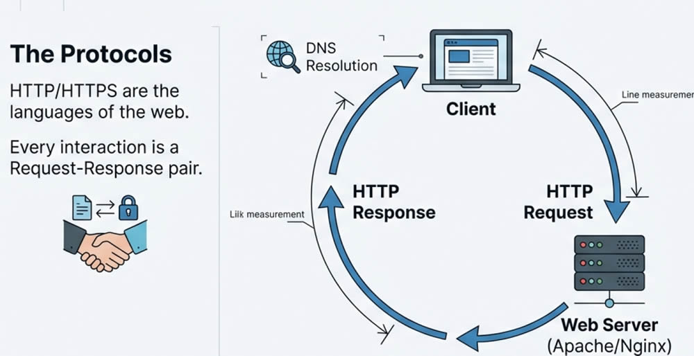
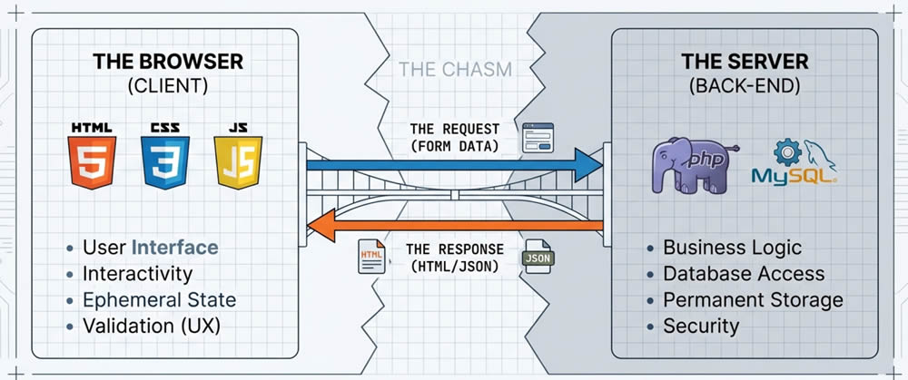
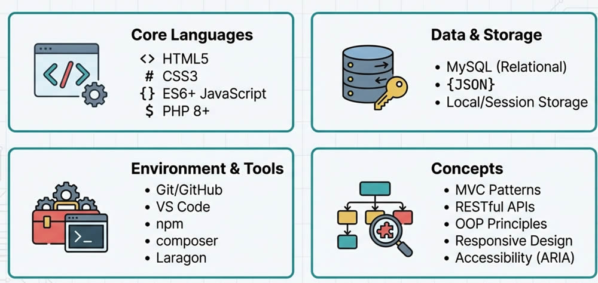
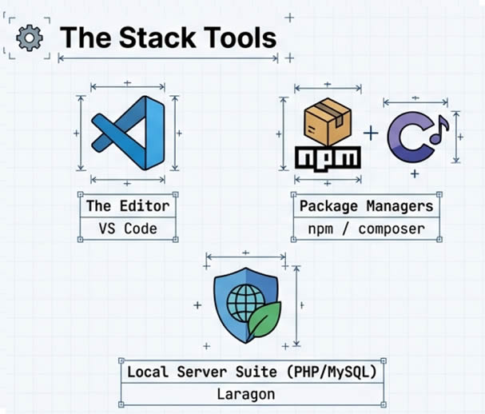

CS381
Web Application Development
Module 1: Foundations and Modern Web Development
Muhammad Rafiq
Computer Science and Engineering Department, Yanbu Industrial College
Course Roadmap
Learning Objectives
Web Evolution
Static to PWAs
How Web Works
HTTP, DNS, Servers
DevTools
Browser debugging
Git & GitHub
Version control
Dev Environment
VS Code + Laragon
Build Project
Multi-page website
Evolution of Web Applications
From static pages to modern web apps
The Web Timeline
Static Sites
Plain HTML files
No databases
Dynamic Apps
PHP, databases
Server rendering
SPAs
React, Angular, Vue
Client rendering
PWAs
Offline, installable
App-like
Static Websites (1990s)
- Plain HTML files
- No server processing
- Simple and fast
- Hard to update
<!DOCTYPE html>
<html>
<head>
<title>My Page</title>
</head>
<body>
<h1>Welcome!</h1>
<p>This is static.</p>
</body>
</html>Dynamic Web Apps (2000s)
- Server-side: PHP, ASP, JSP
- Database-driven content
- User authentication
- CMS platforms
<?php
// Connect to database
$users = $db->query(
"SELECT * FROM users"
);
// Dynamic output
foreach($users as $user) {
echo "<p>" . $user['name'] . "</p>";
}
?>Single Page Applications (2010s)
Client-side Rendering
JavaScript builds the UI
No Page Reloads
AJAX fetches data
Component Based
Reusable UI pieces
Fast Navigation
App-like experience
Frameworks: React Angular Vue
Progressive Web Apps (2015+)
Offline
Works without internet
Push Notifications
Engage like native
Installable
Add to home screen
How the Web Works
Understanding HTTP, DNS, and Web Servers
Request-Response Cycle
What Happens When You Visit a URL?
www.example.com
HTTP Methods
GET
Retrieve data
POST
Submit data
PUT
Update resource
DELETE
Remove resource
GET /api/users HTTP/1.1
Host: www.example.com
Accept: application/json
Authorization: Bearer eyJhbGci...GET vs POST: How Data is Sent
GET - Data in URL
GET /search?q=hello&page=1 HTTP/1.1
Host: example.com- Data visible in URL
- Can be bookmarked
- Limited length (~2048 chars)
- Use for: search, filters, navigation
POST - Data in Body
POST /login HTTP/1.1
Host: example.com
Content-Type: application/x-www-form-urlencoded
username=ahmed&password=secret- Data hidden in request body
- No size limit
- Use for: forms, passwords, file uploads
HTTP Status Codes
2xx Success
200OK201Created204No Content
3xx Redirect
301Moved Permanently302Found
4xx Client Error
400Bad Request401Unauthorized404Not Found
5xx Server Error
500Internal Server Error503Service Unavailable
HTTPS - Secure HTTP
TLS/SSL Encrypted
Encryption
Data protected
Authentication
Verify identity
Integrity
Detect tampering
DNS - Domain Name System
The "phonebook" of the internet
A - Maps domain to IPv4
CNAME - Alias to another domain
MX - Mail server records
Web Servers
Apache
- Most popular (~30%)
- .htaccess config
- mod_rewrite
- Used in Laragon
Nginx
- High performance
- Great for static files
- Reverse proxy
- Event-driven
Browser Developer Tools
Your best friend for web development
Opening DevTools
Windows / Linux
F12 or Ctrl+Shift+I
macOS
Cmd+Option+I
Or right-click any element → Inspect
DevTools Panels
Elements
Edit HTML/CSS
Console
JS errors & logs
Network
HTTP requests
Sources
Debug with breakpoints
Application
Storage & cookies
Performance
Speed analysis
Console Methods
// Basic logging
console.log('Info message');
console.warn('Warning!');
console.error('Error!');
// Log as table
console.table([
{name: 'John', age: 25},
{name: 'Jane', age: 30}
]);
// Measure time
console.time('operation');
// ... code to measure
console.timeEnd('operation');Version Control with Git
Track changes, collaborate, never lose code
Why Version Control?
History
Track every change
Collaborate
Work together
Branching
Work in isolation
Backup
Safe in cloud
Rollback
Undo mistakes
Blame
Find who changed what
Git Workflow
Directory
Area
Repository
Repository
git add → git commit → git push
Essential Git Commands
# Initialize repository
git init
# Check status
git status
# Stage files
git add . # All files
git add filename.html # Single file
# Commit changes
git commit -m "Add login feature"
# View history
git log --onelineWorking with Remotes
# Clone a repository
git clone https://github.com/user/repo.git
# Add remote
git remote add origin https://github.com/user/repo.git
# Push to remote
git push -u origin main
# Pull latest changes
git pull origin mainGitHub
Cloud platform for Git repositories
Pull Requests
Review code changes
Issues
Track bugs/features
Actions
CI/CD automation
Good vs Bad Commit Messages
Bad
fix stuff
update
asdfasdf
WIP
changes
.Good
Add user authentication
Fix login redirect bug
Update password validation
Refactor database queries
Remove unused importsDevelopment Environment
Tools you need to build web applications
VS Code
- Free & open source
- IntelliSense
- Integrated terminal
- Git integration
- Extensions ecosystem
Laragon
All-in-one development environment for Windows
Apache
PHP 8.x
MySQL
Node.js
D:\laragon\www\
├── project1\ → http://project1.test
├── project2\ → http://project2.test
└── cs381\ → http://cs381.testPractical Exercise
Build a Multi-Page Static Website
Task Overview
D:\laragon\www\
Deliverables
3 Pages
Home, About, Contact
Semantic HTML5
Proper structure
CSS Flexbox/Grid
Modern layouts
Responsive
Mobile friendly
GitHub Repo
Version controlled
README.md
Documentation
Summary
Web Evolution
Static → PWA
HTTP/DNS
Request-Response
DevTools
Debug like a pro
Git
Version control
GitHub
Collaboration
Laragon
Local dev env
Next Module: HTML5 - Semantic elements, forms, APIs
Questions?
Module 1: Foundations and Modern Web Development
Thank you!